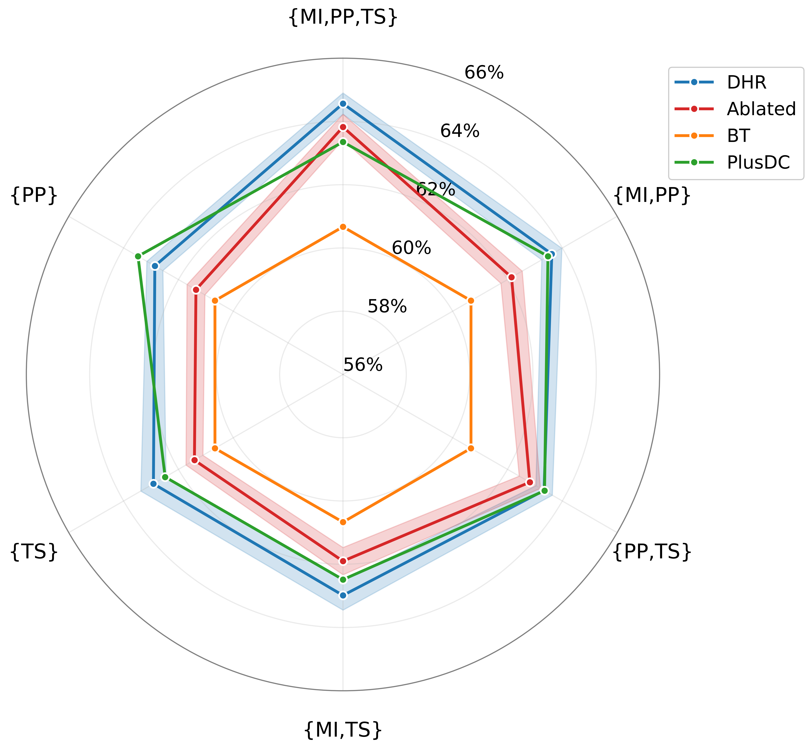
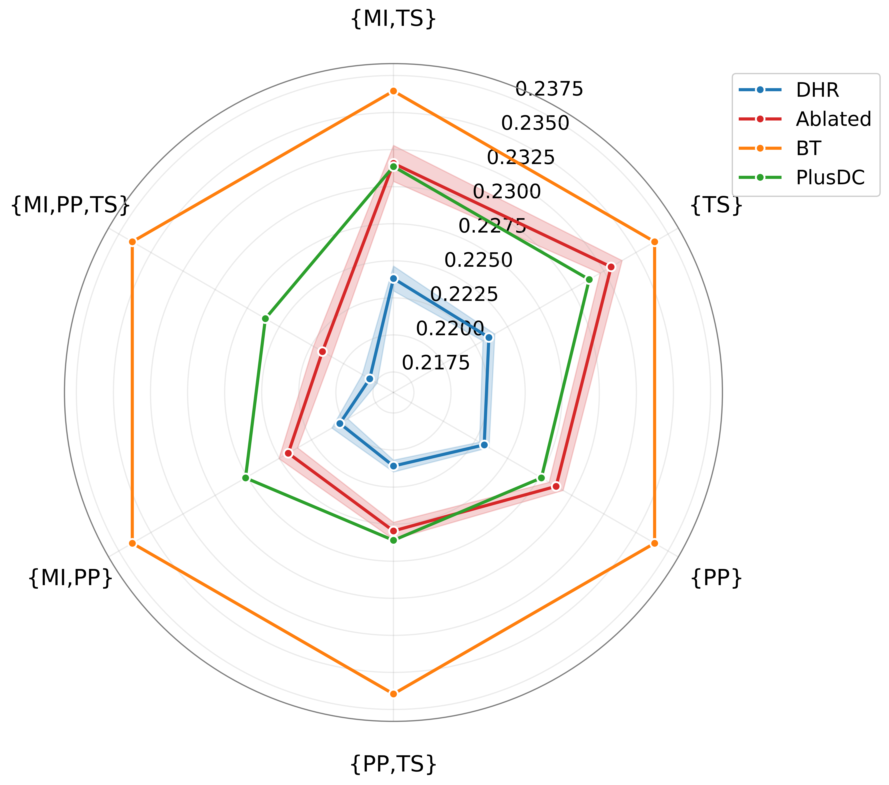

Flagship project
Decision-grade forecasts for every tennis match.
A compact prediction lab for ranking data: match probabilities, model comparisons, and a clean path toward real-time deployment.
What it does
Turns ranking data into an investable-style signal.
Interactive prediction book
Compare model calls match by match.
Search the held-out ATP demo season. Bars now show the probability assigned to each model's selected winner.
Benchmarks
Three views of the same market.
Short, comparable scorecards. The technical detail stays in the research layer.
Future product architecture
Built for more sports, more markets, more signals.
Prediction API
Clean JSON feeds for web, dashboards, and downstream products.
Model operations
Training and inference pipelines stay outside the website layer.
Visual asset slot
Reserved for future product imagery, partner logos, or live-market graphics.
Research foundation
Evidence without over-disclosure.
Selected public-facing results from the ATP study. Deeper methodology can move to protected pages later.

